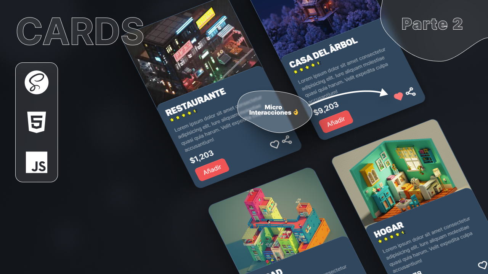
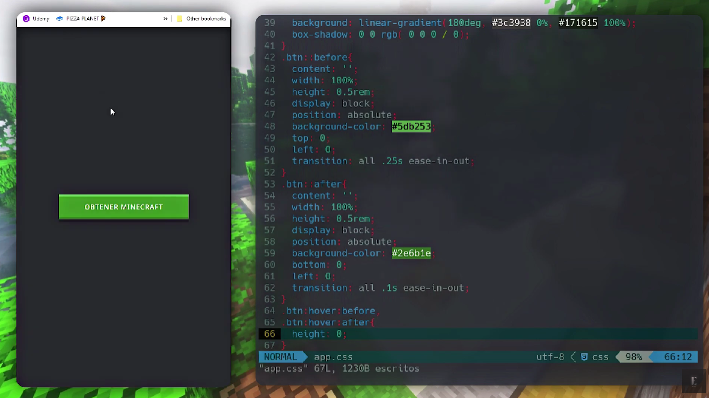
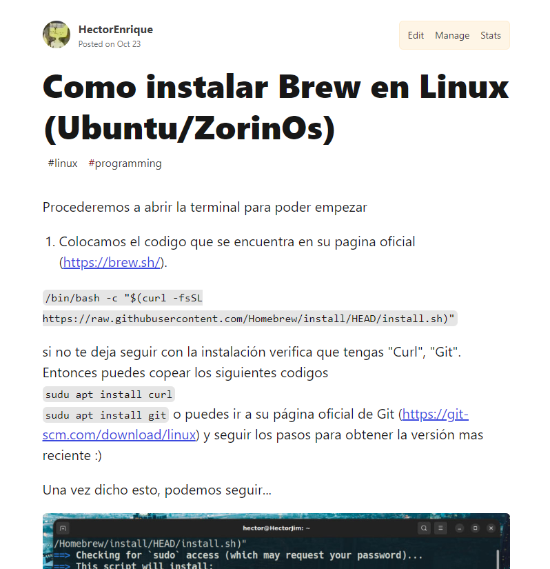

Artículos Cómo instalar y configurar tailwind usando PostCSS [Es]  Como crear TARJETAS [HTML SASS y JS] | Proyecto M1000  Creando un botón estilo Minecraft (HTML & CSS)  Como instalar Brew en Linux (Ubuntu/ZorinOs)